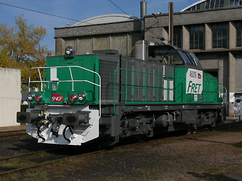
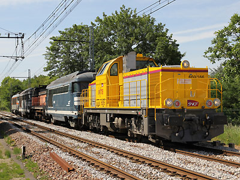
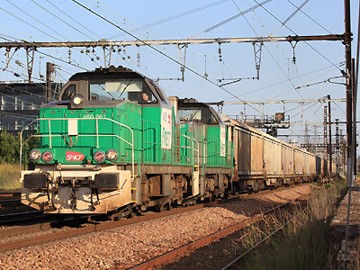

BB 60000
Locomotive thermique de faible puissance destinée à remplacer les BB63000 / 63500 pour les tâches de manoeuvres ou de desserte locale.
Quelques données techniques
Constructeur : Alstom, Vossloh
Pour plus d'info :
La fiche BB 60000 sur
Wikipedia
L'inventaire des BB 60000 sur
Trains du Sud-Ouest
La BB 60000 version Open Rails 
L'équipe des Compagnons du rail a réalisé un pack de BB 60000 en livrées Fret, Infra et E-Genie.


La BB 60019 présentée aux JPO de Chalindrey (22/09/2007)

La BB 60166 tire un train de machines Infra à Bièvres (13/05/2011)

Les BB 60061 et 60029 en UM à Vert de Maisons (17/06/2012)